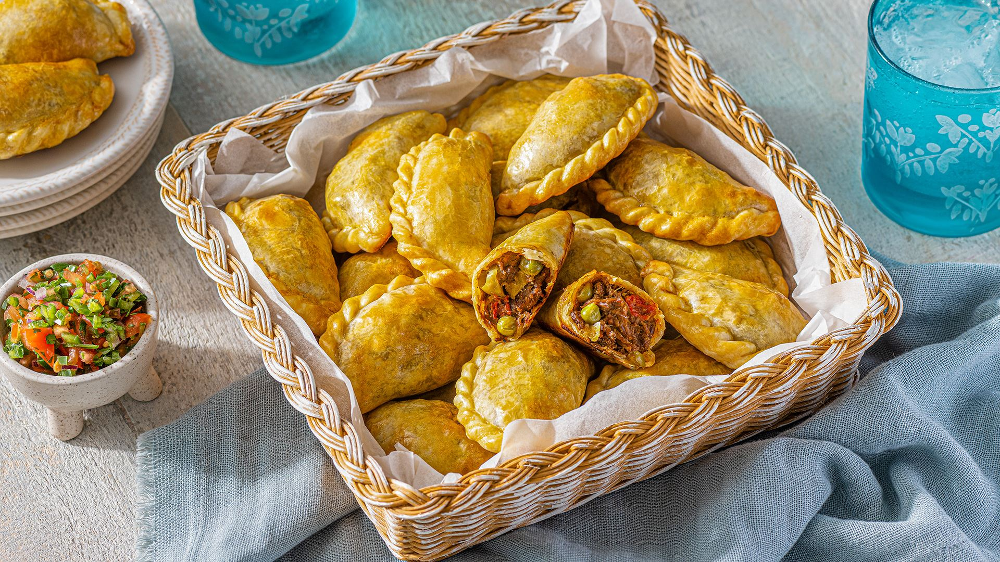
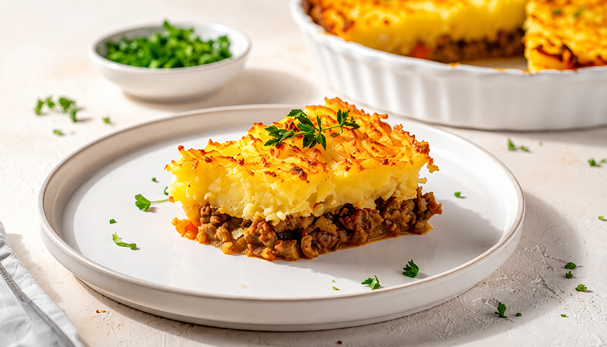
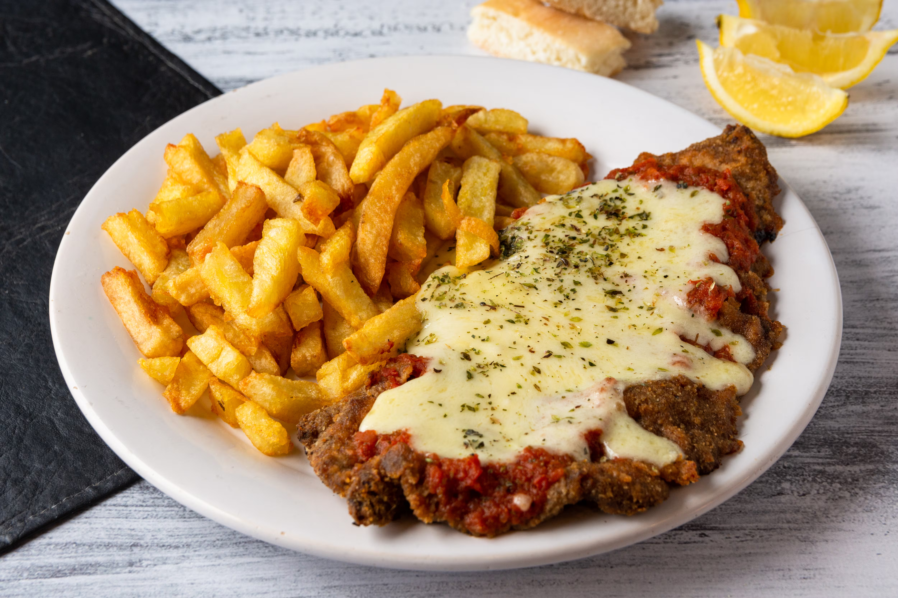

Empanadas Salteñas
Empanadas
Historia de las empanadas
Las empanadas salteñas constituyen un emblema de la gastronomía argentina, particularmente de la región noroeste del país, y poseen raíces históricas que remiten a la influencia española y árabe de los panes rellenos que se introdujeron en América durante la época de la colonización. Se caracterizan por una masa fina que envuelve un relleno elaborado con carne vacuna picada, cebolla, pimiento, papas, huevos duros y aceitunas, condimentado cuidadosamente con sal, pimienta, pimentón y comino, y que se cocina al horno hasta obtener un dorado uniforme
INGREDIENTES Y CANTIDADES
DOCENA
| Carne picada | 500 Gramos |
|---|---|
| Cebolla blanca | 200 Gramos |
| Pimenton | 100 Gramos |
| Papas | 2 unidades (150 Gramos) |
| Huevo duro | 2 unidades (100 Gramos) |
| Aceituna (opcional) | 12 unidades |
| Aceite | 2 cucharadas |
| Sal | 5 Gramos(cucharadita) |
| Pimienta negra molida | 1 Gramo |
| Pimenton dulce | 3 Gramos |
| Comino molido | 1 Gramo |
| Agua | 45 ml |
| Masa de empanadas | 12 unidades |
Paso a Paso
1. Preparación previa de ingredientes: Picar finamente la cebolla (1 unidad, ~200 g) y el pimiento rojo (1 unidad, ~100 g). Pelar y cortar las papas (2 unidades, ~150 g) en cubitos pequeños de aproximadamente 1 cm. Cocinar los huevos (2 unidades) hasta que estén duros enfriar, pelar y picar.
2. Cocción del relleno: En una sartén, calentar 2 cucharadas (30 ml) de aceite o grasa a fuego medio. Agregar la cebolla y el pimiento, y cocinar durante 5 a 7 minutos hasta que estén transparentes. Incorporar la carne vacuna picada (500 g) y cocinar durante 8 a 10 minutos, removiendo hasta que pierda su color rojo.
3. Condimentación y cocción final del relleno: Añadir 1 cucharadita (5 g) de sal, 1/2 cucharadita (1 g) de pimienta, 1 cucharadita (3 g) de pimentón y 1/2 cucharadita (1 g) de comino. Incorporar las papas en cubitos y cocinar durante 10 a 12 minutos, hasta que estén tiernas. Si la mezcla queda seca, agregar 2 a 3 cucharadas (30–45 ml) de agua.
4. Reposo del relleno: Retirar del fuego y dejar enfriar durante 15 a 20 minutos. Una vez frío, agregar los huevos duros picados (2 unidades) y las aceitunas verdes (12 unidades, opcional). Mezclar suavemente.
5. Armado de las empanadas: Colocar aproximadamente 2 cucharadas (40–50 g) de relleno en cada tapa de empanada (12 unidades de masa de 25 g cada una). Cerrar y realizar el repulgue tradicional o sellar con tenedor.
6. Horneado: Precalentar el horno a 180 °C. Colocar las empanadas en una bandeja ligeramente aceitada o con papel manteca. Hornear durante 20 a 25 minutos, hasta que estén doradas.
7. Reposo y servicio: Retirar del horno y dejar reposar 5 minutos antes de servir.

Pastel de Papa
Pastel de papa
Histora del pastel de papa
El Pastel de papa es un plato de origen popular muy arraigado en la cocina rioplatense, especialmente en Argentina y Uruguay, y su historia está vinculada a la adaptación local de preparaciones europeas de “pasteles” o “coberturas” hechas con puré de papas, que llegaron a América con la inmigración masiva del siglo XIX. Su antecedente más claro se encuentra en el shepherd’s pie británico, un pastel de carne cubierto con puré de papa, que fue adoptado y transformado por las familias inmigrantes europeas —principalmente italianas, españolas e inglesas— al incorporar ingredientes disponibles en la región como carne vacuna, cebolla, morrón, huevo duro y aceitunas. Con el tiempo, en Argentina adquirió identidad propia y se volvió un plato casero y económico muy difundido en hogares de distintas clases sociales, valorado por su practicidad, su carácter rendidor y su capacidad de aprovechar sobras, consolidándose como un clásico de la cocina hogareña y de bodegones tradicionales.
INGREDIENTES Y CANTIDADES
4 PORCIONES
| Papa | 1 Kg |
|---|---|
| Leche | 150 ml |
| Manteca | 50g |
| Sal | 1 cucharada(5g) |
| Carne picada | 500g |
| cebolla | 1 unidad (200g) |
| Moron rojo | 1/2 unidad (50g) |
| Pimienta | 1/2 cucharada (1g) |
| Pimenton | 1 Cucharada (3g) |
| Huevos Duros | 2 unidades |
Paso a Paso
1. Preparar el puré Hervir las papas en agua con sal durante 20–25 minutos hasta que estén blandas. Escurrir y pisar. Agregar la manteca (50 g), la leche (150 ml) y sal (5 g). Mezclar hasta lograr un puré suave
2. Preparar el relleno En una sartén, calentar el aceite (30 ml) y sofreír la cebolla y el morrón durante 5–7 minutos. Agregar la carne (500 g) y cocinar 8–10 minutos hasta dorar.
3. Condimentar Añadir sal (5 g), pimienta (1 g) y pimentón (3 g). Mezclar bien y cocinar 2 minutos más.
4. Armado del pastel En una fuente para horno, colocar una capa de carne. Agregar huevos duros picados y aceitunas. Cubrir con el puré de papa.
5. Horneado Llevar al horno a 200 °C durante 20–25 minutos, hasta que la superficie esté dorada.
6. Servir Dejar reposar 5–10 minutos antes de servir.

Milanesa Napolitana
Milanesa Napolitana
Histora del Milanesa Napolitana
La Milanesa a la napolitana es un plato emblemático de la gastronomía argentina que tiene una historia curiosa, ya que no nació en Italia (como su nombre podría sugerir), sino en Argentina, específicamente en Buenos Aires, a mediados del siglo XX. Su origen se atribuye a una adaptación local de la milanesa clásica —inspirada en la cotoletta italiana traída por inmigrantes— a la que se le incorporaron ingredientes como salsa de tomate, jamón y queso, probablemente en la década de 1940 o 1950. Existen distintas versiones sobre su creación, pero una de las más difundidas sostiene que surgió en un restaurante cercano al estadio Luna Park, donde un cocinero habría intentado “disimular” una milanesa que se había quemado cubriéndola con salsa y queso, dando lugar a la preparación que luego se popularizó rápidamente. El nombre “napolitana” no hace referencia a la ciudad de Nápoles como origen del plato, sino más bien al estilo de salsa de tomate asociado a la cocina italiana en general. Con el tiempo, la milanesa a la napolitana se consolidó como un clásico de bodegones y hogares argentinos, convirtiéndose en uno de los platos más representativos del país por su sabor abundante y su fuerte identidad local.
INGREDIENTES Y CANTIDADES
4 PORCIONES
| Carde (corte de cuadrada o nalga) | 150-180g cada una |
|---|---|
| huevos | 2 unidad |
| Ajo | 2 dientes(opcional) |
| Sal | 1 cucharada(5g) |
| Pimienta | 1/2 cucharada (1g) |
| Pan rallado | 200g |
| Harina | 100g |
| aceite para freir o pincelar | cantidad necesaria (aprox. 150–200 ml si es frita) |
| Salsa de tomate | 200-250g |
| Jamon cocido | 4 fetas (aprox 100g) |
| Queso muzarella | 200g |
| oregano | 1 cuchara (2g) |
Paso a Paso
1. Preparar la carne Aplanar ligeramente los bifes si es necesario. Salpimentar (5 g de sal y 1 g de pimienta).
2. Empanado Pasar cada bife por harina (100 g total), luego por huevo batido (2 unidades) y finalmente por pan rallado (200 g).
3. Cocción de la milanesa Freír en aceite caliente (150–200 ml) durante 3–4 minutos por lado hasta dorar, o cocinar al horno a 200 °C durante 15–20 minutos.
4. Armado napolitano Colocar la milanesa en una fuente. Cubrir con 200–250 g de salsa de tomate, luego 100 g de jamón y finalmente 200 g de mozzarella.
5. Gratinar Llevar al horno a 200 °C durante 8–12 minutos, hasta que el queso se derrita y gratine.
6. Servir Espolvorear un poco de oregano antes de servir.